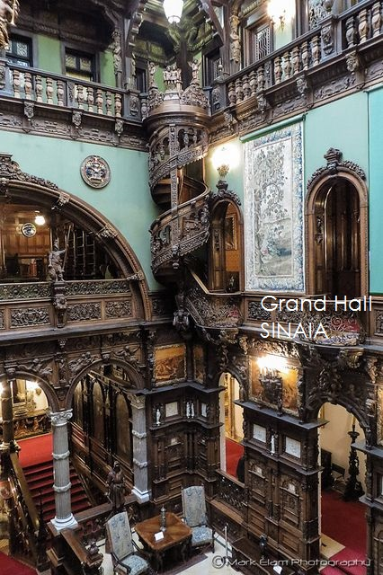
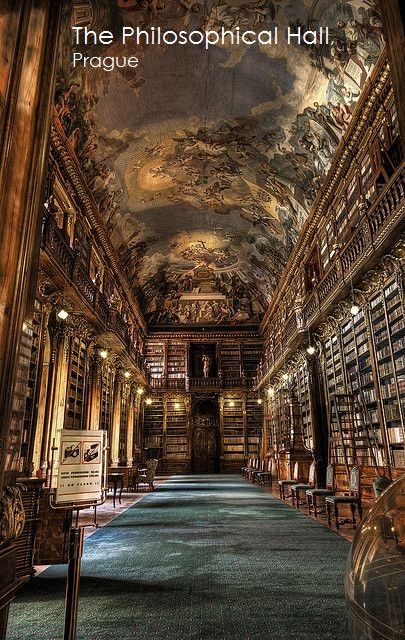

En europe de nombreuse architectures mysctic traverses les siecles et les générations.A Prague, est présent le deuxième monastère le plus ancien de Prague,nommé 'the philosophycal hall'qui a été fondé au-dessus de Malá Strana en 1143 par Vladislav II. Ou encore Le château de Peleș en roumanie, situé au nord-ouest de la ville de Sinaia.

- 
- 


Decimus Burton et Richard Turner ont conçu le Palm House dans les jardins botaniques royaux de Londres à
Kew.
Inspirés par Chatsworth qui était le protagoniste du verre dans l'architecture en 1837.
A Pali Hill. Les espaces conçus de manière organique se fondent les uns dans les autres, rapprochant la
nature du vivant.
Les espaces prennent une forme sculpturale avec certains enveloppés de mosaïque turquoise, certains de
blancs, tandis que d'autres en ardoise et vert.
Xilitla,au Mexique est connue pour le paysage spectaculaire de ses montagnes luxuriantes et de ses
sources, ainsi que pour son jardin de sculptures de Las Pozas.